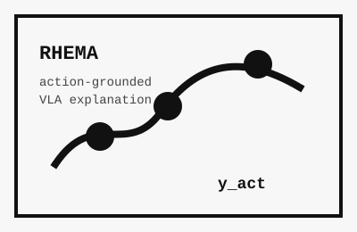
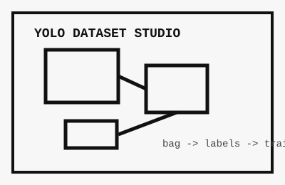

🎓 Education
Konkuk University
Mar 2022 - Current
B.S. in Computer Science and Engineering
|
🌍 Experience
Trustworthy Machine Learning Lab (TML), Konkuk University
Jun 2025 - Current
Undergraduate Researcher
Advisor: Prof. Sangwoo Hong
Working on Physical AI explainability and VLA-based autonomous driving explanation research.
Team K.A.I, Konkuk University
May 2025 - Nov 2025
Perception / Autonomous Driving
Built ROS2 perception pipelines for competition vehicles, including YOLO traffic-light detection, ros2bag-based dataset construction, camera-LiDAR fusion, obstacle-distance estimation, and control-facing topic/service interfaces.
|
|

|
Look Where You Drive: Action-Based Visual Explanation for Autonomous Driving VLAs
Dohyeong Kim, et al.
ECCV 2026 Submission
Proposed RHEMA, a post-hoc action-grounded visual explanation method for autonomous driving VLAs. Contributions include the y_act problem formulation, SimLingo/ReCogDrive adaptation, dual-source fusion, ablation design, and rebuttal-oriented result analysis.
|
|

|
YOLO Dataset Studio
Github
A CLI workspace for custom YOLO dataset bootstrapping: ROS2 bag/video ingestion, OpenCV GUI labeling, teacher/student training, auto-labeling, split/merge/sampling, and active-learning candidate selection. Used in autonomous driving competitions.
|
✨ Awards
Kookmin University Autonomous Driving Contest
Aug 2025
1st Prize
Team K.A.I perception contribution: competition-specific YOLO dataset construction, ROS2 detection interface, center-lane tracing, camera-LiDAR fusion, DBSCAN obstacle-distance estimation, E-Stop, and ultrasonic-based overtaking logic.
2025 College Student Creative Mobility Competition
Nov 2025
Excellence Award in Creative Technology · Special Award in Autonomous Driving Performance
Built a three-class traffic-light dataset and lightweight YOLO pipeline for real competition lighting/camera conditions, then passed green-light decisions to control code through ROS2 services/topics.
1st Physical AI Hackathon
Feb 2026
2nd Prize, Fine Folding Track
Connected local smolVLA inference with real dual-arm manipulation through data collection, calibration, and action execution.
|
|